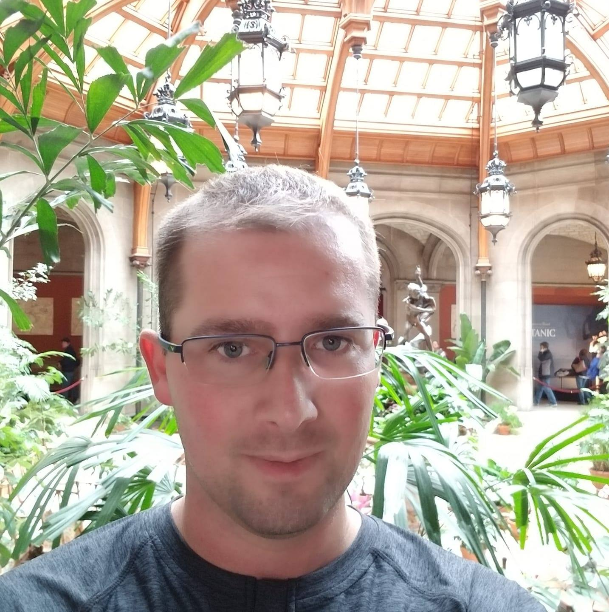

About Me

I balance, I weave, I dodge, I frolic, and my bills are all paid. On weekends, to let off steam, I participate in full-contact origami. Years ago I discovered the meaning of life but forgot to write it down. I have made extraordinary four course meals using only a mouli and a toaster oven. I breed prizewinning clams. I have won bullfights in San Juan, cliff-diving competitions in Sri Lanka, and spelling bees at the Kremlin. I have played Hamlet, I have performed open-heart surgery, and I have spoken with Elvis.
I can hurl tennis rackets at small moving objects with deadly accuracy. I once read Paradise Lost, Moby Dick, and David Copperfield in one day and still had time to refurbish an entire dining room that evening. I know the exact location of every food item in the supermarket. I have performed several covert operations for the CIA. I sleep once a week; when I do sleep, I sleep in a chair. While on vacation in Canada, I successfully negotiated with a group of terrorists who had seized a small bakery. The laws of physics do not apply to me.